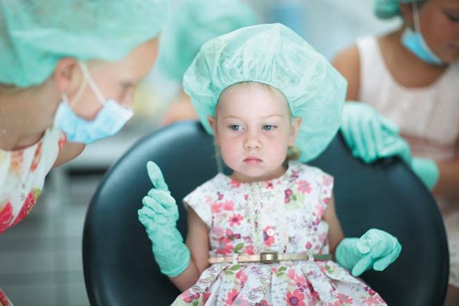
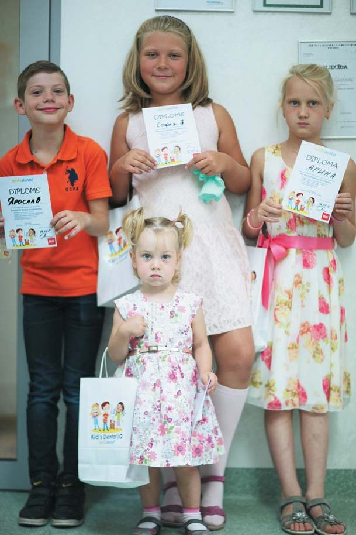

Наука · журнал «ДентАрт» 2023 №4
Терапевтичний талант: дослідження феномену
Therapeutic Talent: Study of the Phenomenon
У психотерапевтичній практиці та практиці лікарів ми неодноразово зустрічаємося з тим, що терапевтичний талант відіграє істотну роль. І хоча в міру навчання гуманістичній психотерапії молоді професіонали розвивають, здавалося б, усі потрібні для роботи компетенції, ми все ж таки знову і знову виявляємо вплив на їхню подальшу роботу деякого фактора X, про який, зокрема, говорив і писав Девід Орлінський (Orlinsky, 2014).
У зв’язку з цим ми сформулювали питання для дослідження:
- Що таке терапевтичний талант?
- Як люди розуміють і відчувають терапевтичний талант?
- Які категорії/фактори він охоплює?
Нині немає єдиної концепції таланту, хоча у межах певних напрямів, наприклад, у сфері творчості (художньої обдарованості) та бізнесу (талановитого менеджменту), нагромаджено значний емпіричний матеріал (Becker, Huselid & Beatty, 2009; Meyers, van Woerkom, Dries, 2013; Ansar, 2018; Tyskbo, 2019; Skuza, Woldu, Alborz, 2022 та ін.). Також суперечливі життєві уявлення про талант. Наприклад, талант завжди знайде доріжку, але, з іншого боку, його потрібно відкрити. Або талантові все дається легко, але, з іншого боку, без поту та праці талант не розвинеться. З одного боку, талант або є, або його немає, і тут нічого не вдієш, а з другого — будь-яка людина талановита... (Серебрякова, 2016).
Подібно до досліджень таланту у сфері менеджменту, що відкривають перспективу для відбору персоналу, навчання та розвитку керівників, а також бізнес-планування з урахуванням людських ресурсів, дослідження терапевтичного таланту дають можливості для більш осмисленого підходу у відборі на навчальні програми та методологічного підходу до навчання. Крім того, дослідження цієї теми дає чіткіше уявлення про те, з яких «інгредієнтів» складається терапевтичний талант, у чому його особливість та які характеристики медичного і гуманістичного терапевта, який має терапевтичний талант, створюють умови для успішного терапевтичного процесу.
У зв’язку з цим ми пропонуємо поміркувати про талант у цілому, а також розглянути результати дослідження, проведеного нами за програмою Балтійського інституту психотерапії і присвяченого тому, яким чином люди визначають і відчувають терапевтичний талант (ТТ) у терапевтів-медиків та психотерапевтів.

Визначення таланту
Талант як наукове та життєве поняття
Талант як наукове поняття рідко зустрічається у психологічній літературі. Можливо, що одна з причин полягає в тому, що до вивчення цієї категорії складно підійти в руслі доказової позитивістської науки — лейтмотиву нашого часу. Однак окремі роботи все ж таки існують. У статті, присвяченій феномену таланту, Каріне Серебрякова (2016) пише про те, що немає діагностичних методик, за допомогою яких можна було б визначити наявність таланту у конкретної людини і зрозуміти, в чому вона полягає. На думку авторки, талант — скоріше життєве поняття, ніж наукове.
«Можливо, що річ тут не тільки чи не стільки в наявності поєднання високорозвинених здібностей і, тим більше, не в успішності діяльності та її результативності, а в наявності якоїсь однієї складової, довкола якої далі вже вибудовуються різні супутні здібності, що дозволяють реалізовувати цей талант у трудовому, творчому чи громадському житті. Талановитий фахівець, чи художник, чи чиновник завжди знаходить оптимальний варіант вирішення проблеми або дивовижним чином знаходить ту дзвінку ноту, на яку емоційно відгукується душа» (Серебрякова, 2016, с. 45).
Спираючись на сукупне теоретичне розуміння, талант можна визначити як високий рівень здібностей людини до певної діяльності; як унікальне поєднання здібностей, що дозволяють успішно, самостійно та оригінально виконувати складні завдання.
Ідеї, пов’язані з вивченням теми здібностей, розвивалися протягом усього XX століття, включаючи дослідження обдарованості, таланту і геніальності. М. Теплов, Л. Виготський, А. Леонтьєв, С. Рубінштейн, Б. Ананьєв (представники діяльного підходу) зробили значний внесок у вивчення здібностей, виділивши чотири рівні їх розвитку: здібність, обдарованість, талант, геніальність. Але про саму природу таланту можна міркувати по-різному. У найзагальнішому вигляді теоретичні підходи до його опису можна віднести щонайменше до чотирьох категорій: Божественний дар, продукт геніального роду, множинний інтелект і унікальність людини. Розглянемо кожен із них.
Божественний дар. Тривалий час панувало уявлення про Божественний дар, що визначає індивідуальні відмінності людей. Ще Платон писав про те, що «поет творить не від мистецтва і знання, а від божественного призначення й одержимості». Слово «талант» походить від грецьк. talanton, що означає міру ваги; і сама етимологія слова, і один із поглядів на талант відбилися в притчі про трьох рабів, яким господар дав різну кількість талантів срібла на час своєї відсутності і сказав, щоб ними розпорядилися. Кожен із них розпорядився по-своєму: один закопав у землю, другий розміняв, а третій примножив (розвинув) свій талант, за що був винагороджений. Із Нового Завіту, де описана ця притча, слово «талант» поширилося у переносному значенні: як Божий дар, можливість творити, і творити щось нове, не нехтуючи цим даром.
Наступна категорія описів природи таланту — продукт геніального роду — доповнює попередню, описуючи талант як вроджену якість, зумовлену спадковістю. Таке нове розуміння таланту склалося у середині ХІХ століття. Френсіс Гальтон, англійський учений, натхнений працями свого двоюрідного брата Чарльза Дарвіна, активно розробляв ідею про те, що геніальна людина є «продуктом геніального роду» (перша частина його статті «Hereditary Character and Talent» вийшла у 1865 році). Гальтон ретельно аналізував родоводи видатних людей і виявив низку закономірностей, які вказують, на його думку, на те, що прояви обдарованості залежать насамперед від спадковості. Такі ідеї підтримуються і сьогодні. Автори (наприклад, Deery & Jago, 2015; Tyskbo, 2019) вважають, що вроджені здібності, котрі поєднують когнітивні здібності, особисті якості та мотивацію, мало схильні до змін з часом.
У свою чергу, наступний підхід — талант як старанний розвиток початкових здібностей — ґрунтується на передумові про те, що талант спирається на компетенції, набуті у результаті освіти і практики. Підхід до таланту як до набутих компетенцій ідентифікує людей, які мають певні здібності та бажають їх розвивати. Ця ідея яскраво відображена в діяльному підході, представленому школою вчених-психологів, котрі, як було зазначено вище, виділяють: здібність, обдарованість, талант, геніальність. Така послідовність узгоджується і з теорією Гальтона про спадковість та інтелект, яку він описав наприкінці XIX століття, згідно з якою талант, як і здібності, властивий людині від народження, але проявляється поступово, розвиваючись у процесі набуття певних навичок і досвіду. Талант досягає високого рівня у певній діяльності, відрізняючись принциповою новизною та оригінальністю підходу. Для прояву і розвитку таланту потрібні висока працездатність, самовіддача, стійка мотивація та оволодіння знаннями і вміннями у спеціальній галузі. Невипадково більшість видатних учених, письменників і художників вважають, що їхні досягнення на 90 % залежать від праці і лише на 10 % — від таланту.
Ще один підхід описує талант як множинний інтелект. На початку 1980-х років, натхнений психологією та ідеями Еріка Еріксона, Говард Гарднер написав книгу «Межі розуму». Він також вивчав ідеї Жана Піаже про розвиток дитини і навіть започаткував проєкт зі зміни системи навчання у школах. У своїй концепції Гарднер (1980) виділяє 9 типів таланту, які він визначає як множинний інтелект:
- Музичний інтелект.
- Міжособистісний інтелект.
- Внутрішньоособистісний інтелект.
- Візуально-просторовий інтелект.
- Лінгвістичний інтелект.
- Кінестетичний інтелект.
- Логіко-математичний інтелект.
- Натуралістичний інтелект.
- Екзистенційний інтелект.
Талант як унікальність людини. У відповідності з гуманістичною традицією, універсальних здібностей немає — кожна особистість унікальна, і розвиваючи свою унікальність, прагнучи самоактуалізації, виявляє себе у творчості, характер якої найбільше гармонує з індивідуальністю окремої особистості (Маслоу, 1999). Подібна думка відображена в концепції Поля Вайнцвайга (1990), згідно з якою кожна людина приходить у цей світ зі своїми, тільки їй властивими схильностями і талантами. У разі їх нереалізованості життя людини виявляється тяжким і позбавленим сенсу (Грановська, 2002).
І все ж таки деякі автори-гуманісти у своїх роботах вказують на такий феномен, як талант, кажучи, що ряд видатних людей ним володіли. Зокрема, Ролло Мей пише: «Талант може бути віднесений до явищ психофізіологічних і розглядатися як щось дане людині. Людина може мати талант незалежно від того, використовує вона його чи ні; талант як такий, мабуть, може бути дано і „нікчемній" людині» (Мей, 2001, с. 37).
При цьому Мей звертає увагу на те, що талант може проявити себе лише в діяльності — творчій діяльності. Однак, згідно з Меєм, мистецтво можливе і без таланту — у цьому випадку творчість визначена високою інтенсивністю зустрічі. З цього приводу автор наводить приклад американського письменника Томаса Вулфа — генія без таланту. Він був творцем у тому сенсі, що повністю віддавався своїй ідеї та бажанню висловити її, — він був видатний завдяки інтенсивності зустрічі (Мей, 2001, с. 37).
Таким чином, нині спостерігається відсутність єдиного погляду, концепту, теоретичного та емпіричного підходів до розуміння обдарованості і таланту. Проте, розглядаючи питання обдарованості й таланту, автори схильні інтегрувати існуючі концепти. Найчастіше у сучасних публікаціях талант описується як визначні здібності або обдарованість якостями, що дозволяють досягати визначних результатів у певній діяльності (Siripipatthanakul і співавт., 2022). При цьому думки про те, вроджений талант чи набутий, розходяться. У першому випадку автори говорять про те, що талант вроджений, а тому когнітивні здібності, особисті якості та мотивація, що зумовлюють талант, видаються мало схильними до змін з часом (Tyskbo, 2019). Цей підхід можна пов’язати з елітарним підходом, який має на увазі обмеженість кількості талановитих людей.
Другий підхід — це підхід набутих компетенцій: передбачається, що люди, які мають певні нахили, можуть за бажання розвивати їх як компетенції, доводячи до рівня таланту (Skuza, Woldu, Alborz, 2022). У цьому випадку кількість талановитих людей не обмежена.

Визначення терапевтичного таланту
Сьогодні матеріалів, присвячених терапевтичному таланту, дуже мало. У процесі роботи над статтею нам вдалося знайти лише кілька наукових публікацій (Nissen-Lie, Orlinsky, 2014; Орлова, 2023). При цьому опосередковано цю тему порушують автори-гуманісти, які описують особистість психотерапевта як «головний інструмент» його роботи (Rogers, 1950; Бьюдженталь, 2015 та ін.). У зв’язку з цим автори виділяють якості, потрібні терапевтові, у тому числі відповідальність, уміння жити тут і тепер, конгруентність (автентичність). Можна припустити, що у своїй сукупності ці якості визначають талант терапевта, проте, як, зокрема, зазначає сучасний дослідник психотерапії Девід Орлінський, навіть коли є всі ці якості, залишається ще щось важливе і невловиме між ними — фактор Х.
Про подібне писав Ірвін Ялом у книзі «Екзистенційна психотерапія» (1999): «В академічних текстах, журнальних статтях і лекціях психотерапія зображується як щось точне і систематичне — з чітко окресленими стадіями, зі стратегічними, технічними втручаннями, з методом аналізу об’єктних відносин та ретельно спланованою раціональною програмою, спрямованими на досягнення інсайту інтерпретацій. Однак я глибоко впевнений: коли ніхто не дивиться, терапевт „вкидає" найголовніше» (Ялом, 1999).
Потрібна ще якась сіль, непомітна приправа, щось особливе... Що ж це особливе, про що мовчать? Можливо, терапевтичний талант? Карл Роджерс говорив про велике серце та доброту, про те, що люди приходять за любов’ю (Rogers, 1950). А Ролло Мей (1997) через метафору поранений цілитель в однойменній статті тонко показав портрети талановитих терапевтів. Євгенія Карлін (2023) виділяє загальні якості талановитих психотерапевтів: це емоційна місткість (як можливість контейнерування), подібний опис наводить Орлінський з колегами, використовуючи термін «безмежна щедрість» (як здатність глибоко занурюватися в бесіду, але після закінчення сесії відпускати, переключаючись на наступного клієнта або на інші справи), доброта, творчість (що забезпечується через контакт із внутрішньою дитиною) та мудрість (як поєднання здорового глузду, терпимості і почуття гумору).
Співвідносячи терапевтичний талант з концепцією Гарднера (1980), можна припустити, що він пов’язаний з розвиненим внутрішньоособистісним, міжособистісним та екзистенційним інтелектами. Ось їх опис:
Внутрішньоособистісний інтелект, згідно з Гарднером, — здатність розуміти та усвідомлювати себе, власні потреби, емоції, почуття та переживання, позитивні і негативні сторони, уміти керувати собою (високий самоаналіз і саморефлексія). Терапевтичний талант, зокрема, може виявлятися у глибокому розумінні почуттів і внутрішніх переживань пацієнта та співпереживанні. Терапевт, що має розвинений внутрішньоособистісний інтелект, може емоційно підтримати пацієнта і допомогти розібратися у складних внутрішніх процесах.
Міжособистісний інтелект: цей тип інтелекту пов’язаний з умінням розуміти емоції, потреби та мотиви поведінки інших людей, інтерпретувати та ефективно взаємодіяти з ними. За наявності терапевтичного таланту лікар із розвиненим міжособистісним інтелектом здатний встановлювати довірчі стосунки, бути емпатичним та уважним до потреб пацієнта.
Екзистенційний інтелект: цей тип інтелекту пов’язаний з умінням ставити глибокі філософські питання про сенс життя, існування та особисту відповідальність. Терапевтичний талант може проявитися в умінні допомагати пацієнтам досліджувати і знаходити свої сенси та цінності, давати собі раду з внутрішніми конфліктами, усвідомлювати свої потреби, прагнення та цілі у житті.
Однак згадані погляди на терапевтичний талант — переважно результати спостережень та роздумів. Донині вдалося знайти буквально одне емпіричне дослідження на цю тему. Це робота Ісідори Бегні (Begni, 2005), де авторка, зокрема, досліджує вплив парентифікації на терапевтичну практику і особливо на терапевтичні навички емпатії та встановлення меж (які можуть описуватися як терапевтичний талант). Авторка дослідження використала змішаний метод, при якому 38 психологів-стажерів надали дані самозвіту про конструкції парентифікації (форму дитячої травми, яка виникає внаслідок порушень класичної взаємодії «батьки — діти»), виміряні за допомогою опитувальника парентифікації (Jurkovic, 1997), емпатії, виміряної за допомогою індексу міжособистісної реактивності (Davis, 1980), та вміння ставити межі, виміряне за допомогою індексу експлуатації (Епштейн, 1990). Результати показали передбачальну силу парентифікації щодо емпатії та порушення меж. Після цього в якісному дослідженні було проаналізовано інтерв’ю з чотирма стажерами з використанням тематичного аналізу для вивчення згаданих взаємозв’язків та надано більш глибоке розуміння, особливо щодо їхньої терапевтичної корисності. Об’єднавши отримані результати, дослідження підтвердило, що парентифікація може передусім каталізувати вибір професії психолога, а також вибір спеціалізації у психотерапії, зумовлюючи сильні і слабкі сторони роботи спеціаліста.
Хоча, безумовно, терапевтичний талант — феномен не зі сфери доказової позитивістської науки, його більш системне концептуальне розуміння є важливим завданням, оскільки, як уже було зазначено у вступі, у контексті обговорення особистості терапевта цей феномен зустрічається досить часто. У результаті виникає актуальність розробки своєї власної моделі та визначення.
Фото лікаря-стоматолога Анни Юрковської.
Стаття була підготовлена для «Журналу Інтегративної Психотерапії і Системного Аналізу» (2024 рік) і для «ДентАрту».